Observações:
EXPLORANDO MAIS SOBRE OUTRAS:
Redução de caixa
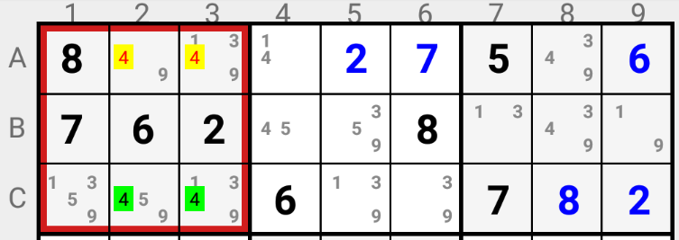
Se todas as células de uma determinada linha ou coluna onde um candidato pode ser encontrado pertencem ao mesmo quadrado, então esse candidato deve ser a solução para uma dessas células e, portanto, não pode ser a solução em nenhuma outra célula desse quadrado.
No exemplo acima, o candidato 4 deve ser a solução em C2 ou C3 na linha "C". Portanto, não pode ser a solução em A2 ou A3 no quadrado "1".
X-Wing Frankenstein
A estratégia básica do X-Wing baseia-se em duas Linhas com restrições em duas Colunas, ou vice-versa. Na estratégia Franken X-Wing, usamos uma Coluna e um Quadrado com restrições em duas Linhas (ou uma Linha e um Quadrado com restrições em duas Colunas).
CBRR Franken X-Wing
Se um determinado candidato estiver presente em apenas duas células de uma coluna,
se você encontrar um quadrado que não se sobreponha a essa coluna e onde o candidato esteja presente nas mesmas duas linhas que nessa coluna,
então essas células formam um padrão chamado CBRR Franken X-Wing (derivado do BB/CC Franken X-Wing). Tal padrão permite eliminar o candidato de todas as células nas linhas do CBRR Franken X-Wing, exceto das células que estão incluídas no próprio CBRR Franken X-Wing.
Se o candidato for a solução na primeira célula da coluna, então ele deve ser a solução na segunda linha do quadrado; se for a solução na segunda célula da coluna, então ele deve ser a solução na primeira linha do quadrado. Portanto, qualquer que seja a solução para o candidato na coluna, ela não pode ser a solução em nenhuma célula das linhas envolvidas fora do CBRR Franken X-Wing.
O candidato não deve estar presente em todas as células do quadrado do CBRR Franken X-Wing, desde que esteja presente em pelo menos uma célula das linhas envolvidas.
O raciocínio também se aplica quando se substitui "Coluna" por "Linha" e "Linha" por "Coluna".
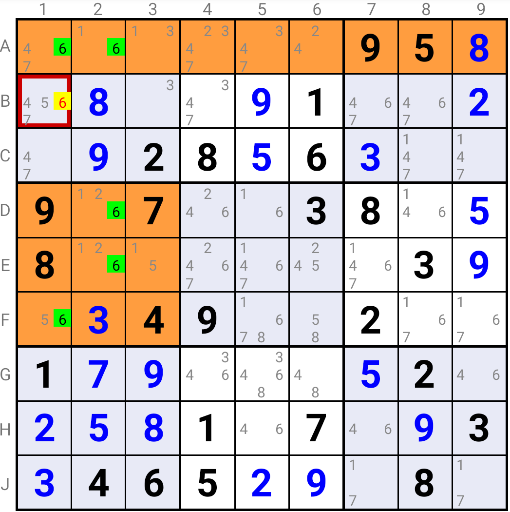
No exemplo acima, o Franken X-Wing é baseado no candidato 6 e é composto pela Linha "1" e Quadrado "4".
Se o candidato 6 for a solução em A1, então não pode ser a solução em B1.
Se o candidato 6 for a solução em A2, então deve ser a solução em F1, o que o elimina de B1.
Qualquer que seja a solução para o candidato 6 na Linha "1", ela nunca poderá ser a solução em B2.
Pares de controles remotos Chute
Se duas células bivaloradas que não se veem mutuamente e contêm os mesmos candidatos compartilham a mesma faixa, e se apenas um desses candidatos estiver presente (como candidato, dado ou solução, não importa) na terceira linha/coluna do terceiro quadrado dessa faixa, então o outro candidato não pode ser a solução em nenhuma célula que veja as duas células bivaloradas.
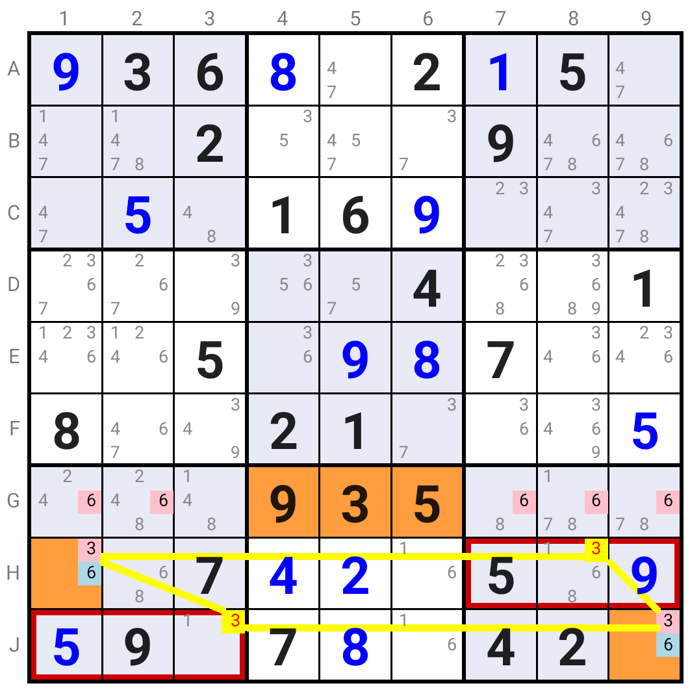
No exemplo acima, se o Candidato 3 fosse a solução em H8 ou em J3, então o Candidato 6 seria a solução em H1 e em J9, eliminando todos os candidatos 6 nos blocos 7 e 9, respectivamente, e a Linha G não teria solução para o Candidato 6, o que não é possível. Portanto, o Candidato 3 pode ser removido em H8 e em J3.
Peixe-espada Frankenstein
A estratégia básica do Swordfish baseia-se em três Linhas com restrições em três Colunas, ou vice-versa. Na estratégia Franken Swordfish, ainda usamos restrições em três regiões. No entanto, as regiões não precisam ser todas do mesmo tipo; elas podem representar várias combinações de Linhas ou Colunas e um Quadrado, resultando nos diferentes tipos de Franken Swordfish.
CCBRRR Peixe-espada Frankenstein
O padrão CCBRRR Franken Swordfish baseia-se em restrições entre duas colunas e um quadrado. Ele leva a potenciais eliminações em três linhas.
Se um determinado candidato estiver presente em três células em duas colunas e se essas células também pertencerem às mesmas linhas,
se você puder encontrar um quadrado que não se sobreponha a essas colunas e onde o candidato esteja presente nas mesmas duas linhas que nessas colunas,
então essas células formam um padrão chamado CCBRRR Franken Swordfish. Tal padrão permite eliminar o candidato de todas as células nas linhas do CCBRRR Franken Swordfish, exceto das células que estão incluídas no próprio CCBRRR Franken Swordfish.
O candidato não deve estar presente em todas as células do CCBRRR Franken Swordfish, desde que todas as combinações permitidas do candidato presente no padrão resultem no candidato sendo a solução em cada região (colunas e quadrado) do padrão.
O mesmo raciocínio se aplica quando você substitui "Coluna" por "Linha" e "Linha" por "Coluna".
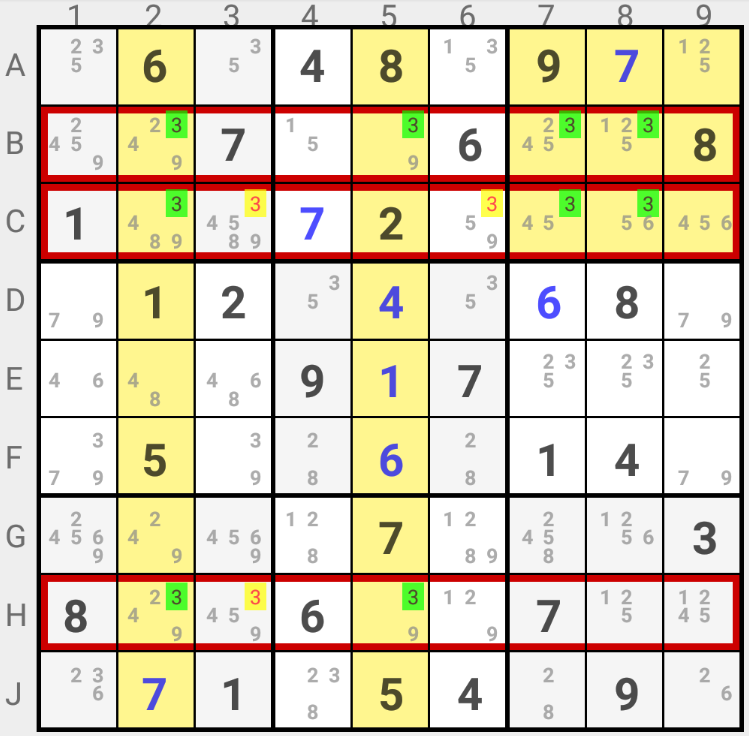
No exemplo acima, o CCBRRR Franken Swordfish é baseado no candidato 3 e é composto pelas colunas "2" e "5" e pelo quadrado "3".
Se o candidato 3 for a solução em B5, então ele é a solução em H2 e em C7 ou em C8.
Se o candidato 3 for a solução em H5, então ele é a solução em C2 ou em C7 ou em C8.
Qualquer que seja a solução para o candidato 3 na coluna "5", ela nunca poderá ser a solução em C3, C6 ou H3.
RRRCCB Peixe-espada Frankenstein
O problema RRRCCB Franken Swordfish baseia-se em restrições entre três linhas. Ele leva a potenciais eliminações em duas colunas e um quadrado. É o inverso do problema CCBRRR Franken Swordfish.
Vamos definir uma faixa como um grupo de três quadrados alinhados horizontalmente ou verticalmente. Por exemplo, os quadrados "1", "2" e "3" formam uma faixa; os quadrados "1", "4" e "7" formam outra faixa.
Se você encontrar uma linha (chamada Linha-1) onde o candidato está presente em apenas duas células (pertencentes à Coluna-1 e à Coluna-2) em quadrados diferentes,
Se você encontrar outras duas linhas
que compartilham uma banda comum,
que contenham apenas o candidato na coluna 1 na faixa que inclui a coluna 1.
que contenham apenas o candidato na coluna 2 na faixa que inclui a coluna 2.
que também contêm o candidato no terceiro quadrado (chamado Quadrado-3)
Então, as células que contêm o candidato formam um padrão chamado RRRCCB Franken Swordfish. Tal padrão permite eliminar o candidato de todas as células na Coluna 1, na Coluna 2 e no Quadrado 3, exceto nas células que estão incluídas no próprio RRRCCB Franken Swordfish. O candidato não deve estar presente em todas as células do padrão, desde que todas as combinações permitidas do candidato presente no padrão resultem no candidato sendo a solução em cada Linha do padrão.
O raciocínio também é aplicável quando você substitui "Coluna" por "Linha" e "Linha" por "Coluna".
 Neste exemplo, o RRRCCB Franken Swordfish é baseado no candidato 7 e é composto pelas linhas "F", "H" e "J".
Se o candidato 7 for a solução em F3, então ele é a solução em H4 ou H6 e em J9.
Se o candidato 7 for a solução em F9, então ele é a solução em J5 ou J6 e em H3.
Qualquer que seja a solução para o candidato 7 na linha "F", ela nunca poderá ser a solução em D3, G6 ou C9.
Túmulo Universal Bi-Valor
Vamos definir um Padrão Mortal como uma configuração de candidatos que leva a várias soluções para um determinado quebra-cabeça. O exemplo mais simples é um quebra-cabeça com apenas duas células não resolvidas contendo os mesmos dois candidatos: tal quebra-cabeça tem duas soluções. Um quebra-cabeça Sudoku adequado tem uma solução única; portanto, resolvê-lo não deve levar a um "Padrão Mortal".
Quando você se depara com uma situação em que todas as células não resolvidas são células "Bi-Valores", exceto uma que ainda contém três candidatos, considere os candidatos nessa célula. Se a eliminação de um deles levar a um Padrão Mortal (os outros dois candidatos ocorrendo duas vezes na linha, duas vezes na coluna e duas vezes no quadrado ao qual a célula pertence), então esse candidato deve ser a solução para essa célula.
De fato, manter esse candidato é a única maneira de evitar um "Padrão Mortal".
Neste exemplo, o RRRCCB Franken Swordfish é baseado no candidato 7 e é composto pelas linhas "F", "H" e "J".
Se o candidato 7 for a solução em F3, então ele é a solução em H4 ou H6 e em J9.
Se o candidato 7 for a solução em F9, então ele é a solução em J5 ou J6 e em H3.
Qualquer que seja a solução para o candidato 7 na linha "F", ela nunca poderá ser a solução em D3, G6 ou C9.
Túmulo Universal Bi-Valor
Vamos definir um Padrão Mortal como uma configuração de candidatos que leva a várias soluções para um determinado quebra-cabeça. O exemplo mais simples é um quebra-cabeça com apenas duas células não resolvidas contendo os mesmos dois candidatos: tal quebra-cabeça tem duas soluções. Um quebra-cabeça Sudoku adequado tem uma solução única; portanto, resolvê-lo não deve levar a um "Padrão Mortal".
Quando você se depara com uma situação em que todas as células não resolvidas são células "Bi-Valores", exceto uma que ainda contém três candidatos, considere os candidatos nessa célula. Se a eliminação de um deles levar a um Padrão Mortal (os outros dois candidatos ocorrendo duas vezes na linha, duas vezes na coluna e duas vezes no quadrado ao qual a célula pertence), então esse candidato deve ser a solução para essa célula.
De fato, manter esse candidato é a única maneira de evitar um "Padrão Mortal".
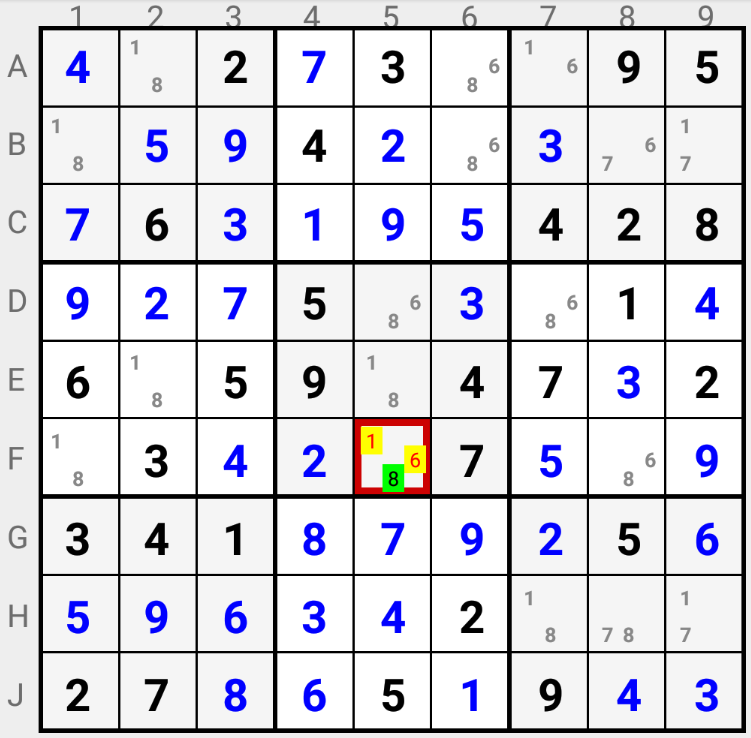
Neste exemplo, se o candidato 8 fosse eliminado na fase F5, haveria duas soluções possíveis:
F1=1, F5=6, F8=8, D7=6, D5=8, E5=1, E2=8, etc.
F1=8, F5=1, F8=6, D7=8, D5=6, E5=1, E2=1, etc.
Com a opção 8 como solução em F5, o enigma tem uma solução única.
3D-Medusa - ZD-Medusa
Se duas Ligações Fortes (veja também a nota no final desta página) compartilham uma Célula comum, podemos formar uma Cadeia de três Células com a Célula comum no meio. Se assumirmos que o candidato na Célula em uma extremidade da Cadeia não é a solução para essa Célula, então ele deve ser a solução para a próxima Célula na Cadeia, devido à definição de Ligação Forte. Isso, por sua vez e pela mesma razão, implica que o candidato não pode ser a solução para a terceira Célula na Cadeia.
Por outro lado, se assumirmos que o candidato na Célula em uma extremidade da Cadeia é a solução para essa Célula, então ele não pode ser a solução para a Célula do meio e deve ser a solução na outra Célula da extremidade da Cadeia.
Se considerarmos uma Cadeia mais longa composta exclusivamente de Ligações Fortes, os Nós sucessivos alternam entre um estado e outro.
Essa estratégia analisa essas cadeias e usa cores para exibir esses estados. Como existem apenas dois estados possíveis, todos os candidatos com a mesma cor simultaneamente devem ser a solução ou não podem ser a solução.
MEDUSA 3D (MESMA COR DUAS VEZES EM UMA CÉLULA): Sabemos que uma das duas cores é a solução. Como dois candidatos não podem ser a solução para uma célula simultaneamente, a cor correspondente não pode ser a solução; todos os candidatos com essa cor podem ser eliminados. A outra cor é a solução.
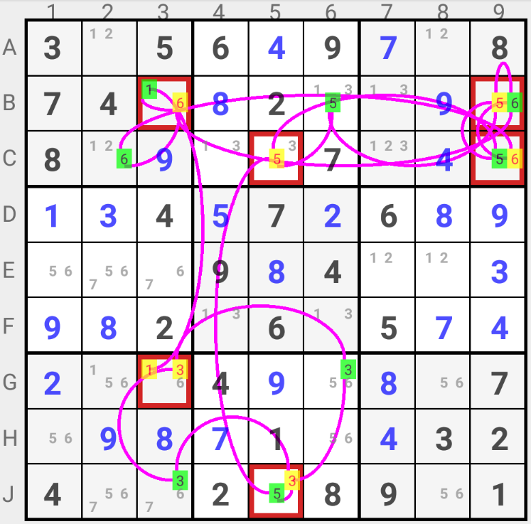
No exemplo, começar colorindo o candidato 3 em J3 leva aos candidatos 1 e 3 em G3 ficarem ambos coloridos de amarelo. Como dois candidatos diferentes não podem ser a solução em uma determinada célula, a cadeia amarela não consegue identificar a solução. Os candidatos coloridos de verde são a solução e todos os candidatos coloridos de amarelo podem ser eliminados.
MEDUSA 3D (DUAS VEZES EM UMA UNIDADE): se dois nós na cadeia pertencem à mesma região (linha, coluna ou quadrado) e se eles têm a mesma cor para o mesmo candidato, então essa cor não pode ser a solução, porque um candidato não pode ser a solução para duas células na mesma região; todos os candidatos com essa cor podem ser eliminados. Portanto, a outra cor é a solução.
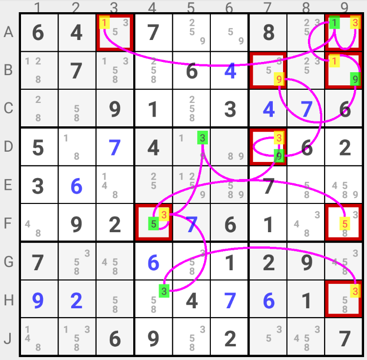
No exemplo, o candidato 3 está colorido de amarelo em A9 e em H9. Se a cor amarela identificasse a solução, então o candidato 3 seria a solução para duas células na coluna "9", o que é impossível. Portanto, a cor verde identifica a solução e todos os candidatos coloridos de amarelo podem ser eliminados.
No entanto, este é um caso teórico. A cadeia é construída usando iterações. A iteração que "colore" o "segundo nó" na mesma unidade é precedida pela iteração que coloriu o nó conectado com a outra cor. Isso significa que, durante essa iteração precedente, o "segundo nó" já viu dois candidatos com cores diferentes (veja abaixo). No exemplo, antes de ser colorido de amarelo, o candidato 3 em H9 vê um candidato 3 amarelo em A9 e um candidato 3 verde em H4. Portanto, a regra "3D MEDUSA (VEGE DUAS CORES DIFERENTES)" teria sido aplicada antes de colorir o candidato 3 em H9 de amarelo.
MEDUSA 3D (DUAS CORES EM UMA CÉLULA): Uma das duas cores é a solução. Se houver dois candidatos com cores diferentes em uma célula, um deles deve ser a solução para essa célula. Portanto, todos os outros candidatos podem ser eliminados da célula.
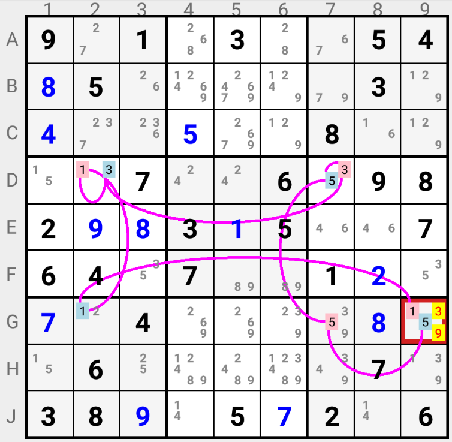
No exemplo, G9 deve ter como solução o candidato 1 ou o candidato 5. Os outros candidatos nesta célula não podem ser a solução.
MEDUSA 3D (VEGE DUAS CORES DIFERENTES): Uma das cores, ou a outra, é a solução. Se um candidato sem cor consegue ver dois candidatos de cores diferentes que não se veem mutuamente, então ele é eliminado por um deles (ainda não sabemos qual).
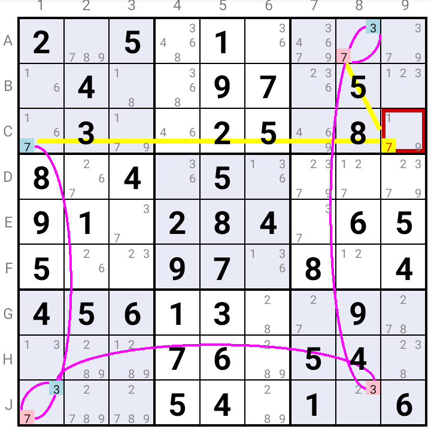
No exemplo, o candidato 7 em C9 vê candidatos 7 de cores diferentes em A8 e em C1. Como o candidato 7 deve ser a solução em uma dessas células, ele não pode ser a solução em C9.
MEDUSA 3D (ELIMINAÇÃO POR CÉLULA UNITÁRIA): Uma das cores, ou uma delas, é a solução. Se um candidato sem cor puder ver um candidato colorido com o mesmo valor e outro candidato em sua própria célula com a cor oposta, então ele não pode ser a solução e pode ser eliminado.
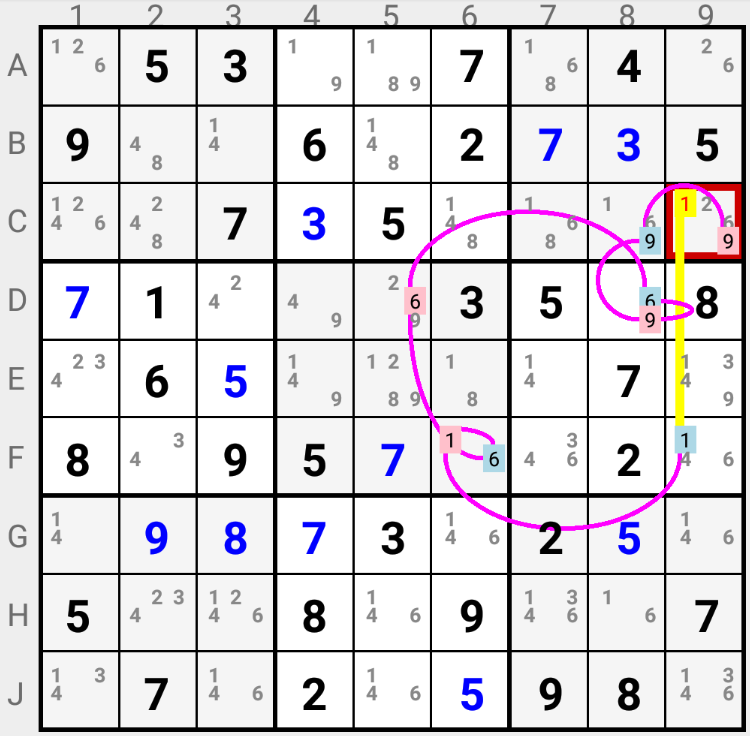
No exemplo, ou o candidato 9 é a solução em C9, ou o candidato 1 é a solução em F9. Como o candidato 1 em C9 vê ambos os candidatos, ele não pode ser a solução em C9.
MEDUSA 3D (ESVAZIANDO UMA CÉLULA): Se uma determinada célula sem cor puder ver células que contenham um dos candidatos dessa célula sem cor, e se todos esses candidatos tiverem a mesma cor, então essa cor não pode ser a solução. De fato, se fosse a solução, eliminaria todos os candidatos da célula em questão, o que não é possível.
 No exemplo, se o candidato 2 fosse a solução em B4 e o candidato 9 a solução em E7, então todos os candidatos possíveis seriam eliminados em E4.
NB: mais formalmente, uma Ligação Forte é a relação que existe entre duas células em uma região (linha, coluna ou quadrado) quando essas duas células são as únicas células nessa região que contêm um determinado candidato: se o candidato não for a solução para a primeira célula, então ele deve ser a solução para a segunda célula, e vice-versa.
Entretanto, nas Estratégias de Encadeamento, consideramos Ligações Fortes como ligações que vão de uma célula ou um grupo de células onde afirmamos que o candidato não é a solução (dizemos que o candidato está no estado "DESLIGADO") para uma célula ou um grupo de células onde ele deve ser a solução (dizemos que o candidato está no estado "LIGADO").
Se considerarmos uma Célula Bivalorada, afirmar que um de seus candidatos não é a solução implica que o outro candidato deve ser a solução. Portanto, existe também uma ligação forte entre os dois candidatos de uma célula "bivalorada".
Uma ligação fraca é aquela que vai de uma célula/grupo de células onde o candidato está "LIGADO" para uma célula/grupo de células onde ele está "DESLIGADO".
Fogos de artifício
Considere duas ligações fortes para o mesmo candidato que tenham uma célula em comum. Se o outro nó de cada ligação consistir em uma única célula e se o candidato for falso nesses nós monocelulares, então ele deve ser verdadeiro na célula comum. Portanto, o candidato deve ser verdadeiro em uma dessas três células.
Esse padrão foi chamado de "Fogos de Artifício" pelo descobridor dessa estratégia. Todos os exemplos são deste blog.
Fogos de artifício triplos
Se for possível encontrar uma combinação de três fogos de artifício que compartilhem a mesma célula e os mesmos nós monocelulares, então um de seus candidatos não pode ser verdadeiro nos nós monocelulares (pois existem apenas dois) e, portanto, deve ser verdadeiro na célula comum, o que implica que os outros dois candidatos são verdadeiros em seus respectivos nós monocelulares.
Conclusão: três candidatos que devem ser verdadeiros em três células implicam que todos os outros candidatos nessas células podem ser descartados.
No exemplo, se o candidato 2 fosse a solução em B4 e o candidato 9 a solução em E7, então todos os candidatos possíveis seriam eliminados em E4.
NB: mais formalmente, uma Ligação Forte é a relação que existe entre duas células em uma região (linha, coluna ou quadrado) quando essas duas células são as únicas células nessa região que contêm um determinado candidato: se o candidato não for a solução para a primeira célula, então ele deve ser a solução para a segunda célula, e vice-versa.
Entretanto, nas Estratégias de Encadeamento, consideramos Ligações Fortes como ligações que vão de uma célula ou um grupo de células onde afirmamos que o candidato não é a solução (dizemos que o candidato está no estado "DESLIGADO") para uma célula ou um grupo de células onde ele deve ser a solução (dizemos que o candidato está no estado "LIGADO").
Se considerarmos uma Célula Bivalorada, afirmar que um de seus candidatos não é a solução implica que o outro candidato deve ser a solução. Portanto, existe também uma ligação forte entre os dois candidatos de uma célula "bivalorada".
Uma ligação fraca é aquela que vai de uma célula/grupo de células onde o candidato está "LIGADO" para uma célula/grupo de células onde ele está "DESLIGADO".
Fogos de artifício
Considere duas ligações fortes para o mesmo candidato que tenham uma célula em comum. Se o outro nó de cada ligação consistir em uma única célula e se o candidato for falso nesses nós monocelulares, então ele deve ser verdadeiro na célula comum. Portanto, o candidato deve ser verdadeiro em uma dessas três células.
Esse padrão foi chamado de "Fogos de Artifício" pelo descobridor dessa estratégia. Todos os exemplos são deste blog.
Fogos de artifício triplos
Se for possível encontrar uma combinação de três fogos de artifício que compartilhem a mesma célula e os mesmos nós monocelulares, então um de seus candidatos não pode ser verdadeiro nos nós monocelulares (pois existem apenas dois) e, portanto, deve ser verdadeiro na célula comum, o que implica que os outros dois candidatos são verdadeiros em seus respectivos nós monocelulares.
Conclusão: três candidatos que devem ser verdadeiros em três células implicam que todos os outros candidatos nessas células podem ser descartados.
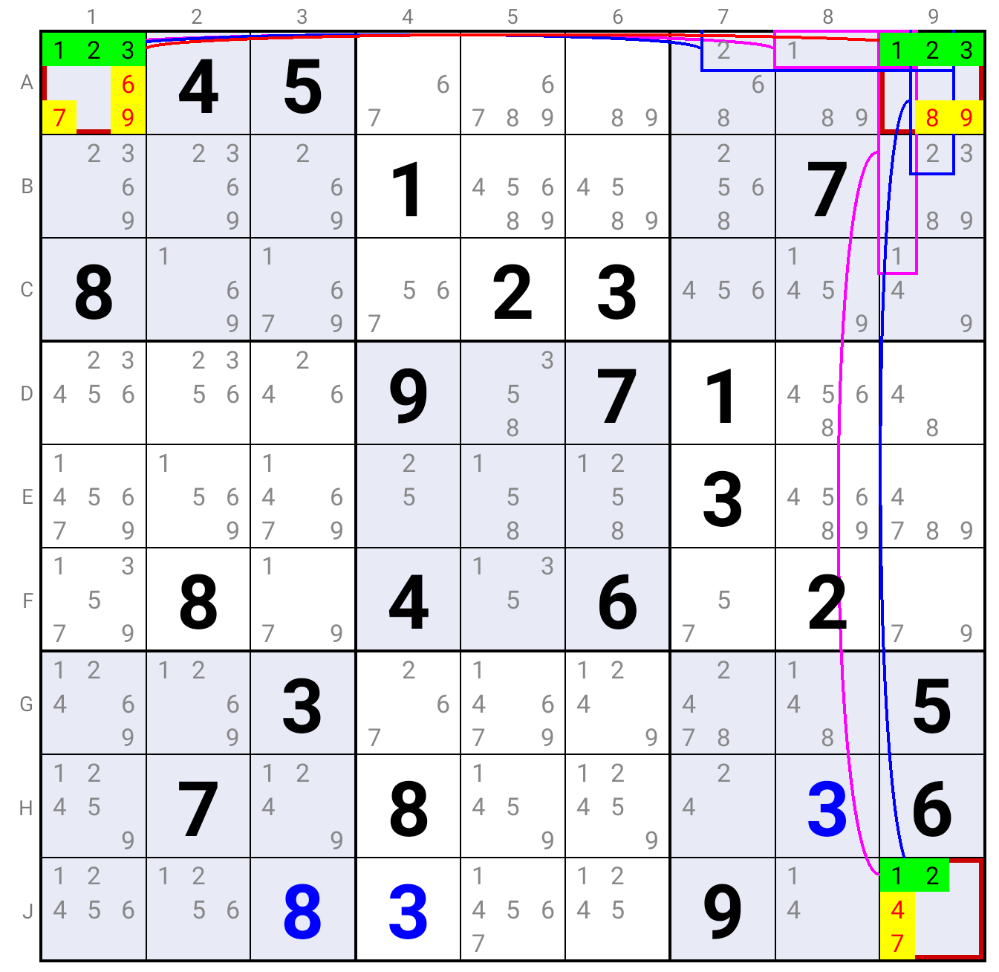
Vale ressaltar que um ou dois desses Fogos de Artifício podem consistir em Ligações Fortes compostas por duas Células individuais, desde que essas Células coincidam com a Célula comum e os nós monocelulares do terceiro Fogos de Artifício (que deve ser um Fogos de Artifício verdadeiro).
Este é o caso no exemplo em que temos dois Fogos de Artifício baseados nos Candidatos 1 e 2, enquanto o terceiro Fogos de Artifício é uma Ligação Forte para o Candidato 3 nas Células A1 e A9.
Fogos de artifício quádruplos
Se for possível encontrar
dois fogos de artifício que tenham a mesma célula e nós monocelulares em comum,
dois outros fogos de artifício para dois outros candidatos que tenham os mesmos nós monocelulares que os dois primeiros fogos de artifício e uma célula em comum que seja diferente da célula em comum dos dois primeiros fogos de artifício,
então esses quatro candidatos devem ser verdadeiros nas quatro células do padrão e todos os outros candidatos nessas células podem ser excluídos.
De fato, um dos candidatos do primeiro par de fogos de artifício deve ser verdadeiro em um dos nós monoCell (eles não podem ser verdadeiros simultaneamente na célula comum).
Isso também é verdade para o segundo par de fogos de artifício.
O que implica que o segundo candidato de cada fogos de artifício deve ser verdadeiro na célula comum de seus fogos de artifício.
.png) Fogos de artifício em forma de asa W
Se for possível encontrar dois Fogos de Artifício que compartilhem a mesma Célula e os mesmos nós monoCell,
e se cada um desses nós monoCell visualizar uma Célula Bi-valor contendo os mesmos Candidatos que esses Fogos de Artifício,
então qualquer Candidato que visualize simultaneamente os nós monoCell e as Células Bi-valor poderá ser eliminado.
De fato, um Candidato de um Fogos de Artifício deve ser verdadeiro em um dos nós monoCell ou na Célula comum.
Se for verdadeiro no nó monoCell, isso o elimina diretamente na Célula alvo.
Se for verdadeiro na Célula comum, então o segundo Candidato é verdadeiro em um dos nós monoCell, o que o elimina na Célula Bi-valor que ele visualiza. Isso, por sua vez, implica que o primeiro Candidato é verdadeiro nessa Célula Bi-valor, o que o elimina na Célula alvo.
Fogos de artifício em forma de asa W
Se for possível encontrar dois Fogos de Artifício que compartilhem a mesma Célula e os mesmos nós monoCell,
e se cada um desses nós monoCell visualizar uma Célula Bi-valor contendo os mesmos Candidatos que esses Fogos de Artifício,
então qualquer Candidato que visualize simultaneamente os nós monoCell e as Células Bi-valor poderá ser eliminado.
De fato, um Candidato de um Fogos de Artifício deve ser verdadeiro em um dos nós monoCell ou na Célula comum.
Se for verdadeiro no nó monoCell, isso o elimina diretamente na Célula alvo.
Se for verdadeiro na Célula comum, então o segundo Candidato é verdadeiro em um dos nós monoCell, o que o elimina na Célula Bi-valor que ele visualiza. Isso, por sua vez, implica que o primeiro Candidato é verdadeiro nessa Célula Bi-valor, o que o elimina na Célula alvo.
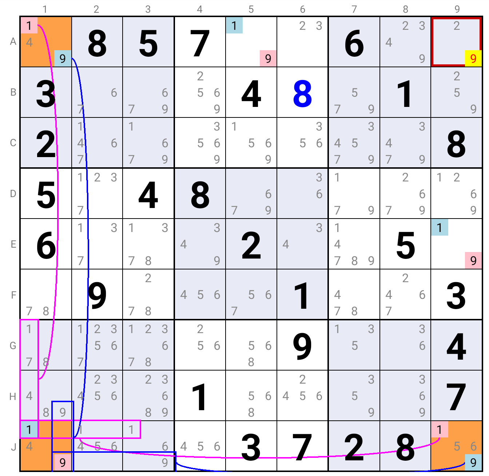
Fogos de artifício da asa L
Se for possível encontrar dois fogos de artifício que compartilham a mesma célula e os mesmos nós monoCell, e se
ambos esses nós monoCell contiverem um outro candidato,
este outro candidato estiver presente em uma célula que visualiza os dois nós monoCell,
e não estiver presente em nenhuma outra célula além do nó monoCell na mesma linha/coluna (o nó monoCell e essa célula formam um vínculo forte nessa linha/coluna),
então este candidato poderá ser removido do outro nó monoCell.
De fato, estando em um vínculo forte, este candidato é verdadeiro ou no nó monoCell, ou na célula que visualiza os dois nós monoCell.
No primeiro caso, os dois candidatos dos fogos de artifício devem ser verdadeiros na célula comum e na mesma linha/coluna que o nó monoCell, sendo que aquele que não é verdadeiro na célula comum deve ser obrigatoriamente verdadeiro no outro nó monoCell.
No segundo caso, ele é eliminado diretamente no outro nó monoCell.
Portanto, o candidato nunca poderá ser verdadeiro no outro nó monoCell.
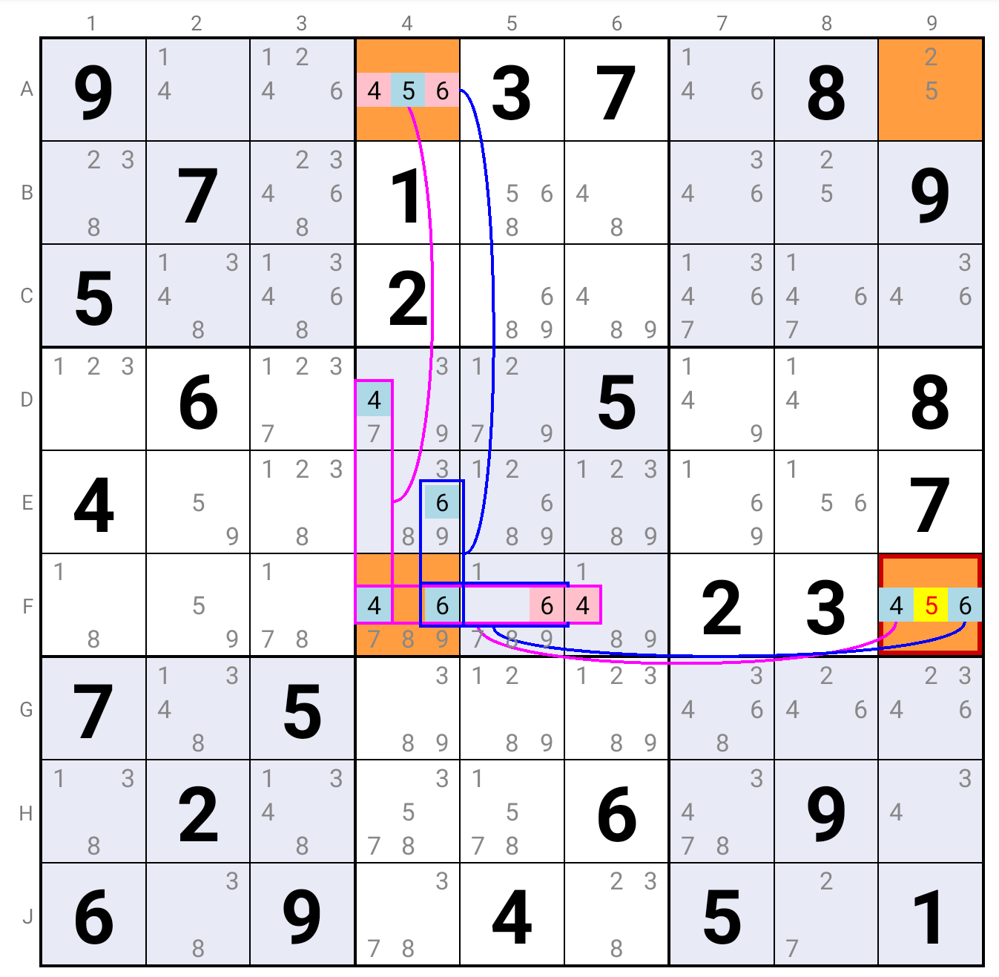
Neste exemplo, se o Candidato 5 for verdadeiro em A9, então 5 é eliminado em F9.
Se for verdadeiro em A4, então o Candidato 4 deve ser verdadeiro em F4 ou D4.
No primeiro caso, o Candidato 6 deve ser verdadeiro em E4, depois falso em F5 e verdadeiro novamente em F9.
No segundo caso, o Candidato 4 deve ser falso em F4 e em F6, e então verdadeiro em F9.
Fogos de artifício da ala ALS
Se for possível encontrar dois pares de fogos de artifício com
os fogos de artifício em cada par tendo a mesma célula comum e nós monoCell,
todos os quatro nós monoCell vendo a mesma célula bivalorada contendo os mesmos candidatos que esses fogos de artifício,
então dois conjuntos de eliminações estão disponíveis:
na célula comum de cada fogos de artifício: todos os candidatos diferentes dos candidatos nos quais os fogos de artifício são baseados;
na linha/coluna que contém os nós monoCell e a célula bivalorada: todos os candidatos nos quais os fogos de artifício são baseados, exceto nos nós monoCell e na célula bivalorada, é claro.
De fato, sendo visto por eles, o candidato que é verdadeiro na célula bivalorada é eliminado de todos os quatro nós monoCell, o que implica que ele é verdadeiro na célula comum de cada fogos de artifício.
Um candidato no qual um fogos de artifício é baseado que não é verdadeiro em sua célula comum deve ser verdadeiro em um de seus nós monoCell.
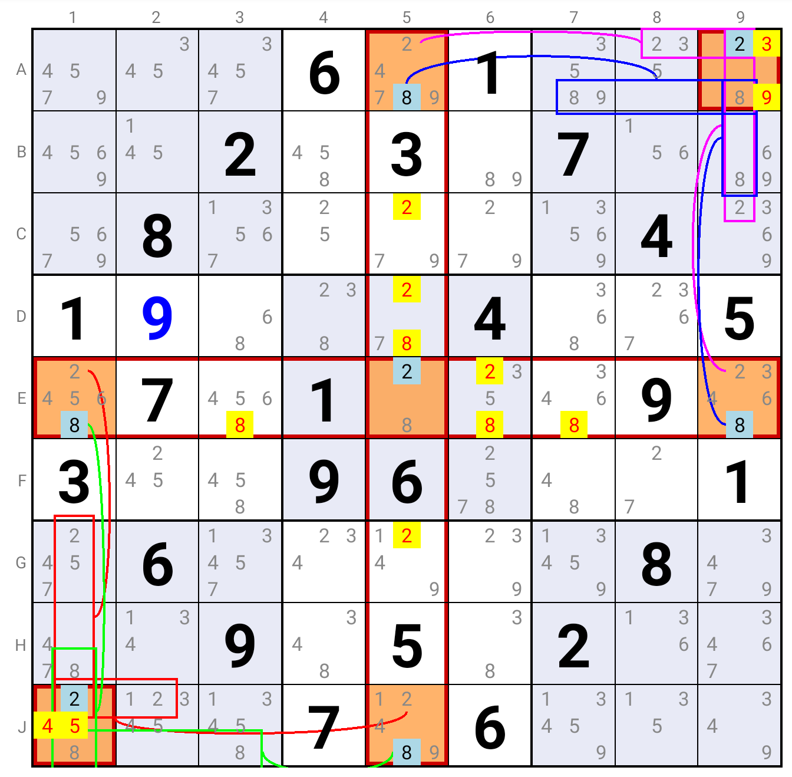
No exemplo, se o Candidato 2 for verdadeiro em E5, então será falso em todos os quatro nós monoCell (A5, E9, J5 e E1) e deverá ser verdadeiro na célula comum (A9 e J1) de cada Fireworks.
Isso implica que o Candidato 8 é verdadeiro em A5 ou em E9. O que o elimina de J5 ou E1, respectivamente. Não ser verdadeiro na célula comum J1 e em um dos nós monoCell J5 ou E1 implica que deve ser verdadeiro no outro nó monoCell (E1 ou J5, respectivamente).
Em qualquer caso, 8 deve ser verdadeiro em A5 ou em J5, e em E1 ou E9. Daí as eliminações.
Para maior clareza da explicação, a hipótese de o Candidato 8 ser verdadeiro em A5 não foi ilustrada. No entanto, o raciocínio é idêntico.
Nota: mais formalmente, um Vínculo Forte é a relação que existe entre duas Células em uma região (Linha, Coluna ou Quadrado) quando essas duas Células são as únicas nessa região que contêm um determinado candidato: se o candidato não for a solução para a primeira Célula, então ele deve ser a solução para a segunda Célula, e vice-versa.
No entanto, nas Estratégias de Encadeamento, consideramos Vínculos Fortes como ligações que vão de uma Célula ou um grupo de Células onde afirmamos que o candidato não é a solução (dizemos que o candidato está no estado "DESLIGADO") para uma Célula ou um grupo de Células onde ele deve ser a solução (dizemos que o candidato está no estado "LIGADO").
Se considerarmos uma Célula Bi-Valor, afirmar que um de seus candidatos não é a solução implica que o outro candidato deve ser a solução. Portanto, também existe um Vínculo Forte entre os dois candidatos de uma Célula "Bi-Valor".
Um elo fraco é uma ligação que vai de uma célula/grupo de células onde o candidato está "LIGADO" para uma célula/grupo de células onde está "DESLIGADO".
Exclusão de Subconjunto
Vamos definir um "Conjunto Quase Bloqueado" ("ALS" em resumo) como um conjunto de n células na mesma região (linha, coluna ou quadrado) contendo no total exatamente (n+1) candidatos: por exemplo, uma célula "Bi-Valor" ou duas células "Bi-Valor" com um candidato em comum.
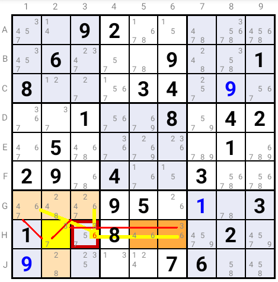
As combinações dos candidatos de duas células não podem duplicar nenhuma combinação dos candidatos do "ALS" que ambas veem completamente.
De fato, se tal combinação fosse a solução para essas duas células, os dois candidatos correspondentes seriam eliminados do "ALS", que então conteria apenas (n-1) candidatos no total para n células.
No exemplo, se o candidato 6 fosse a solução em H3, então:
O candidato 3 como solução em H2 esvaziaria a célula H6 e deixaria apenas um candidato no ALS {H5, H6}.
O candidato 7 como solução em H2 deixaria apenas os candidatos 2, 4 e 8 no ALS {G1, G2, G3, J2}.
O que não é possível.
Sue De Coq Extended
Sue De Coq Extended (Tipo 1)
A estratégia básica de Sue De Coq utiliza duas Células Bi-Valores e células na intersecção entre o quadrado e a linha/coluna que contém essas Células Bi-Valores.
A extensão Tipo 1 substitui uma ou ambas as Células Bi-Valores por Conjuntos Quase Bloqueados (ALS, na sigla em inglês) de múltiplas células. Cada ALS deve ter dois Candidatos em comum com as células de intersecção. Qualquer que seja a solução para o ALS, ela deve conter um desses Candidatos. Portanto, esse Candidato não pode ser a solução em nenhuma das células de intersecção. Sendo isso válido para cada ALS, restam apenas dois Candidatos possíveis nas duas células de intersecção ou três Candidatos possíveis nas três células de intersecção, justificando as eliminações fora do padrão de Sue De Coq.
.png) No exemplo acima, o Sue De Coq Extended Type 1 é baseado em ALS-1 nas células D8 e D9, ALS-2 nas células F1, F2 e F6; as células de interseção são F7 e F8, e os dois pares de candidatos são (3, 5) e (6, 9).
ALS-1 deve ter o candidato 7 como solução em uma de suas células, porque o candidato 7 não é permitido em nenhuma outra célula do quadrado "6". O outro candidato na célula onde ele é a solução deve ser a solução em F7 ou F8.
Portanto, o candidato 6 ou o candidato 9 deve ser a solução na outra célula de interseção, transformando ALS-2 em uma tripla nua. Levando às eliminações indicadas.
Sue De Coq Extended (Type 2)
Nas estratégias básicas de Sue De Coq e na estratégia Sue De Coq Estendida (Tipo 1) acima, cada ALS (lembrando que um Bi-Valor também é um ALS) possui dois Candidatos em comum com as Células de interseção.
Na estratégia Sue De Coq Estendida (Tipo 2), cada ALS pode ter mais de dois Candidatos em comum com as Células de interseção. Seja n1 o número de Candidatos que o primeiro ALS possui em comum com as Células de interseção e n2 o número de Candidatos que o segundo ALS possui em comum com as Células de interseção. Se as Células de interseção consideradas contiverem esses n1 + n2 Candidatos, então as regras de eliminação de Sue De Coq se aplicam.
No exemplo acima, o Sue De Coq Extended Type 1 é baseado em ALS-1 nas células D8 e D9, ALS-2 nas células F1, F2 e F6; as células de interseção são F7 e F8, e os dois pares de candidatos são (3, 5) e (6, 9).
ALS-1 deve ter o candidato 7 como solução em uma de suas células, porque o candidato 7 não é permitido em nenhuma outra célula do quadrado "6". O outro candidato na célula onde ele é a solução deve ser a solução em F7 ou F8.
Portanto, o candidato 6 ou o candidato 9 deve ser a solução na outra célula de interseção, transformando ALS-2 em uma tripla nua. Levando às eliminações indicadas.
Sue De Coq Extended (Type 2)
Nas estratégias básicas de Sue De Coq e na estratégia Sue De Coq Estendida (Tipo 1) acima, cada ALS (lembrando que um Bi-Valor também é um ALS) possui dois Candidatos em comum com as Células de interseção.
Na estratégia Sue De Coq Estendida (Tipo 2), cada ALS pode ter mais de dois Candidatos em comum com as Células de interseção. Seja n1 o número de Candidatos que o primeiro ALS possui em comum com as Células de interseção e n2 o número de Candidatos que o segundo ALS possui em comum com as Células de interseção. Se as Células de interseção consideradas contiverem esses n1 + n2 Candidatos, então as regras de eliminação de Sue De Coq se aplicam.
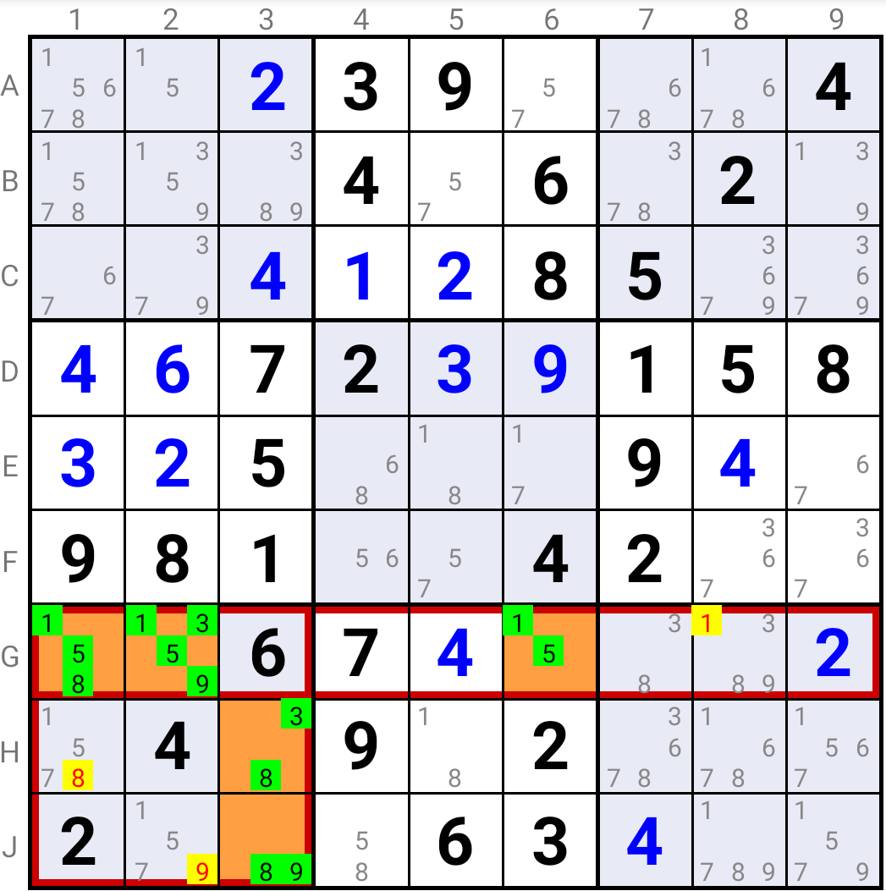
No exemplo acima, o Sue De Coq Extended Type 2 é baseado no ALS-1 nas células H3 e J3, no ALS-2 na célula G6; as células de interseção são G1 e G2, e os dois grupos de candidatos são (3, 8, 9) e (1, 5).
Seja qual for a solução no ALS-2, as células combinadas do ALS-1 e as células de interseção se tornam um Naked Quad.
Loop SK (clássico)
O primeiro passo consiste em identificar a seguinte assinatura de Givens:
Dados em quatro células em quadrados diferentes que formam os cantos de um retângulo (essas células são chamadas de pivôs).
Se a assinatura de Givens for confirmada, outros requisitos se aplicam aos quadrados que contêm os pivôs:
os quadrados localizados na mesma faixa têm um par de candidatos em comum (chamamos isso de ligação externa),
dentro desses quadrados, as duas células na mini-linha que contém o pivô juntas contêm apenas quatro candidatos (essas duas células formam o que chamamos de nó),
as duas células na mini-coluna que contém o pivô também juntas contêm apenas quatro candidatos (essas duas células também formam um nó),
essa mini-linha e essa mini-coluna têm dois candidatos em comum que não fazem parte das ligações externas; esses dois candidatos formam o que chamamos de ligação interna.
Quando todos esses requisitos forem atendidos, as seguintes eliminações podem ser feitas:
na Linha ou Coluna que contém dois pivôs, todos os Candidatos da ligação externa podem ser eliminados fora dos Quadrados que contêm os pivôs.
Em um Quadrado que contém um pivô, todos os Candidatos da ligação interna podem ser eliminados fora da mini-Linha e da mini-Coluna.
De fato,
se 2 Candidatos de uma ligação interna forem verdadeiros em um Nó em um Quadrado específico, então o outro Nó no mesmo Quadrado deve conter os 2 Candidatos da ligação externa neste Nó, o que os elimina do Quadrado vinculado e força os 2 Candidatos da ligação interna deste Quadrado a serem verdadeiros em seu outro Nó; e esse processo se repete até que o ciclo seja fechado.
se 1 Candidato de uma ligação interna for verdadeiro em um Nó em um Quadrado específico, então o outro Candidato da ligação interna é verdadeiro no outro Nó do Quadrado. A outra Célula desses Nós contém, portanto, 1 Candidato da ligação externa associada, que é eliminado do Nó no Quadrado relacionado. Este nó agora deve conter o outro candidato desta ligação externa e 1 candidato da ligação interna neste segundo quadrado. E este processo se repete até que o ciclo seja fechado.
Se 0 candidatos de uma ligação interna forem verdadeiros em um nó em um quadrado específico, então os 2 candidatos da ligação externa neste nó são verdadeiros. Isso os elimina do nó correspondente no quadrado relacionado, no qual os 2 candidatos da ligação interna devem então ser verdadeiros e estamos na mesma situação que acima.
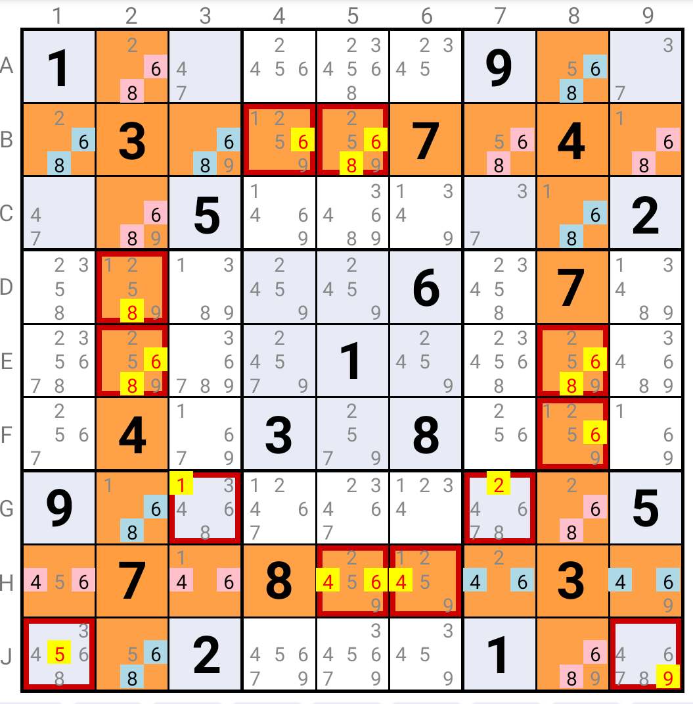
Neste exemplo, se assumirmos que os candidatos 6 e 8 são verdadeiros em B1 e B3,
então os candidatos 2 e 9 são verdadeiros em A2 e C2, e 5 e 1 são verdadeiros em B7 e B9, e os candidatos 6 e 8 são verdadeiros em A8 e C8
o que implica que os candidatos 2 e 9 são verdadeiros em G8 e J8, e os candidatos 4 e 6 são verdadeiros em H7 e H9,
o que, por sua vez, implica que os candidatos 1 e 5 são verdadeiros em H1 e H3, e os candidatos 6 e 8 são verdadeiros em G2 e J2,
O ciclo se fecha e leva às eliminações destacadas em amarelo.
Variante SK Loop
As variantes do Loop SK clássico também levam em consideração:
4 pivôs que apresentam a assinatura dada
as 16 células das mini-linhas e mini-colunas associadas aos pivôs
Os requisitos adicionais para as variantes do Loop SK clássico são os seguintes:
os links internos e externos podem usar 1, 2 ou 3 candidatos, desde que esses 8 links usem todos os candidatos presentes nas 16 células das mini-linhas e mini-colunas associadas aos pivôs
as mini-linhas e mini-colunas associadas aos pivôs podem conter cada uma 1 solução ou 1 dado, que são obviamente excluídos dos links
Quando esses requisitos da variante são atendidos, as mesmas eliminações do Loop SK clássico podem ser feitas, ou seja:
na linha ou coluna que contém dois pivôs, todos os candidatos do link externo podem ser eliminados fora dos quadrados que contêm o pivô
em um quadrado que contém um pivô, todos os candidatos do link interno fora do Mini-linha e mini-coluna
Este primeiro exemplo mostra um Loop SK variante usando links simples, duplos e triplos:
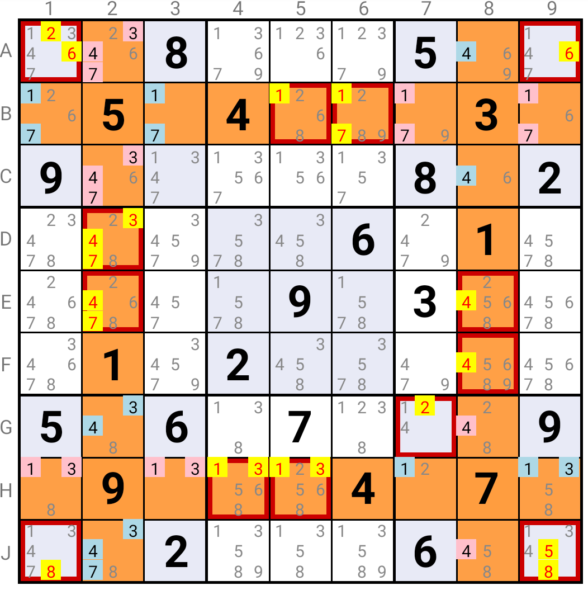
Este segundo exemplo mostra um Loop SK Variante com soluções nas mini-linhas e mini-colunas associadas aos pivôs:
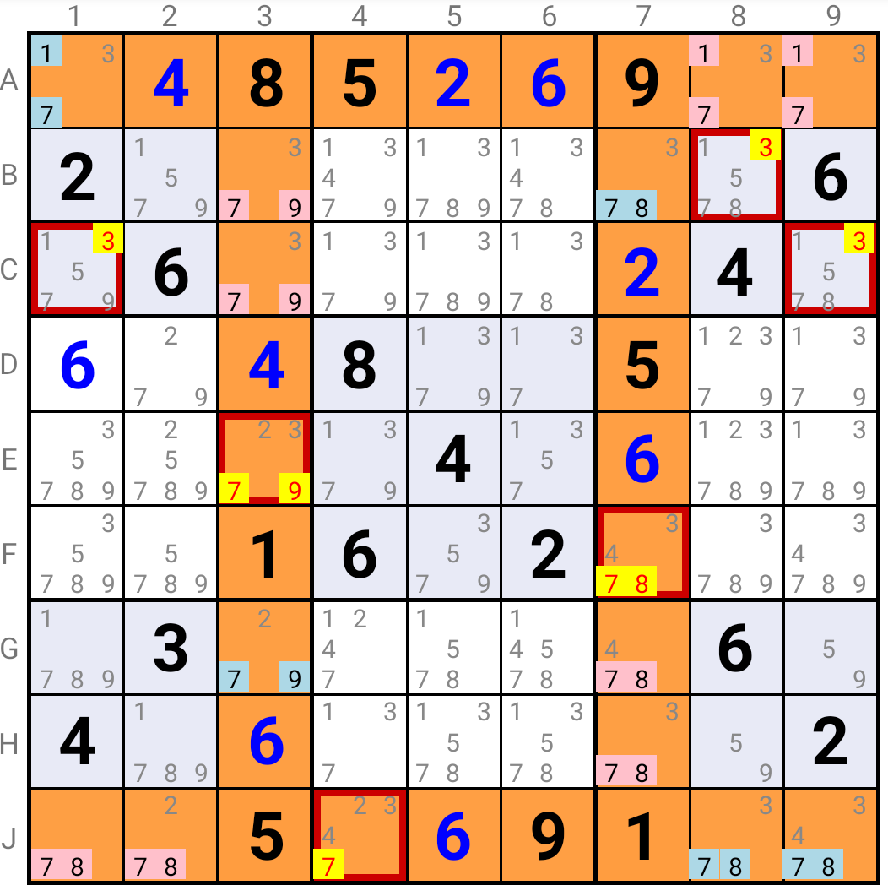
Exocet
Consideremos o seguinte padrão:
B B * * . . * . .
. . * T1 M2 M2 C2 . .
. . * C1 . . T2 M1 M1
. . S S . . S . .
. . S S . . S . .
. . S S . . S . .
. . S S . . S . .
. . S S . . S . .
. . S S . . S . .
CLb CL1 CL2
or
B B * * . . * . .
. . * T1 . . T2 . .
. . * C1 M2 M2 C2 M1 M1
. . S S . . S . .
. . S S . . S . .
. . S S . . S . .
. . S S . . S . .
. . S S . . S . .
. . S S . . S . .
CLb CL1 CL2
onde
B identifica as Células Base
T1 e T2 identificam as Células Alvo
C1 e C2 identificam as Células Companheiras
M1 e M2 identificam as Células Espelho
CLb, CL1 e CL2 identificam as Células de Linha Cruzada
* identifica as Células de Escape
e as seguintes condições:
As Células Base juntas contêm 3 ou 4 Candidatos, que chamamos de Candidatos Base (fora dessas Células e das Células Alvo, eles são chamados de Dígitos Base)
As Células Alvo pertencem à mesma Banda que as Células Base, mas não veem as Células Base
As Células Alvo juntas contêm pelo menos os mesmos 3 ou 4 Candidatos que as Células Base
C1 não contém nenhum Dígito Base presente em T1 e C2 não contém nenhum Dígito Base presente em T2
O Nó Espelho M1 contém os Dígitos Base presentes em T1 e o Nó Espelho M2 contém os presentes em T2
Todas as instâncias de cada Dígito Base como candidato, dado ou valor resolvido nas Células S devem ser limitadas a no máximo duas Casas de Cobertura
Se essas condições forem atendidas, então:
o Candidato Base que será a solução na primeira Célula Base será a solução em uma das Células Alvo e o Candidato Base que será a solução na outra Célula Base será a solução na outra Célula Alvo.
Os Nós Espelho devem conter os mesmos Dígitos Base que suas Células Alvo associadas, juntamente com um dígito falso nas Células Base.
Os dois Candidatos Base que serão a solução nas Células Base devem ser verdadeiros em duas Células S; uma das quais situada na Linha Cruzada CLb.
Tal padrão permite as seguintes eliminações:
Regra 3: qualquer candidato não-base em uma célula alvo é falso.
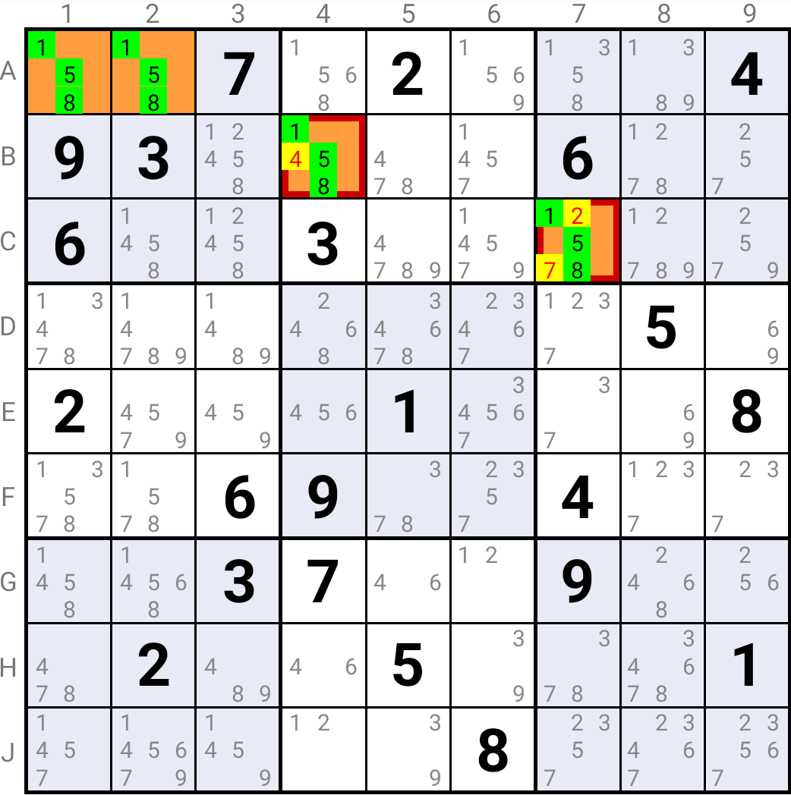
A solução em uma célula alvo deve ser uma candidata base.
Regra 4: um candidato base que deve ser verdadeiro em uma célula alvo é falso na outra célula alvo.
As células alvo devem conter candidatos diferentes.
Regra 5: um candidato base que possui uma linha cruzada como célula de cobertura S deve ser falso na célula alvo dessa linha cruzada.
Uma Linha Cruzada é a coluna inteira (ou linha, quando o padrão Exocet é orientado por colunas) que contém as células S CLb, CL1 ou CL2.
Vamos considerar um padrão com CL2 como cobertura para um determinado Candidato Base. Para atender aos requisitos do padrão, isso implica que esse Candidato deve ser verdadeiro em no máximo uma célula nas células S CLb e CL1.
Se esse Candidato fosse verdadeiro em T2, então também seria verdadeiro em uma das células Base e, portanto, também em CLb. Essa solução em CLb eliminaria o Candidato de CL1, forçando-o como a solução em T1. No entanto, ter o mesmo Candidato como solução em T1 e T2 invalidaria o padrão.
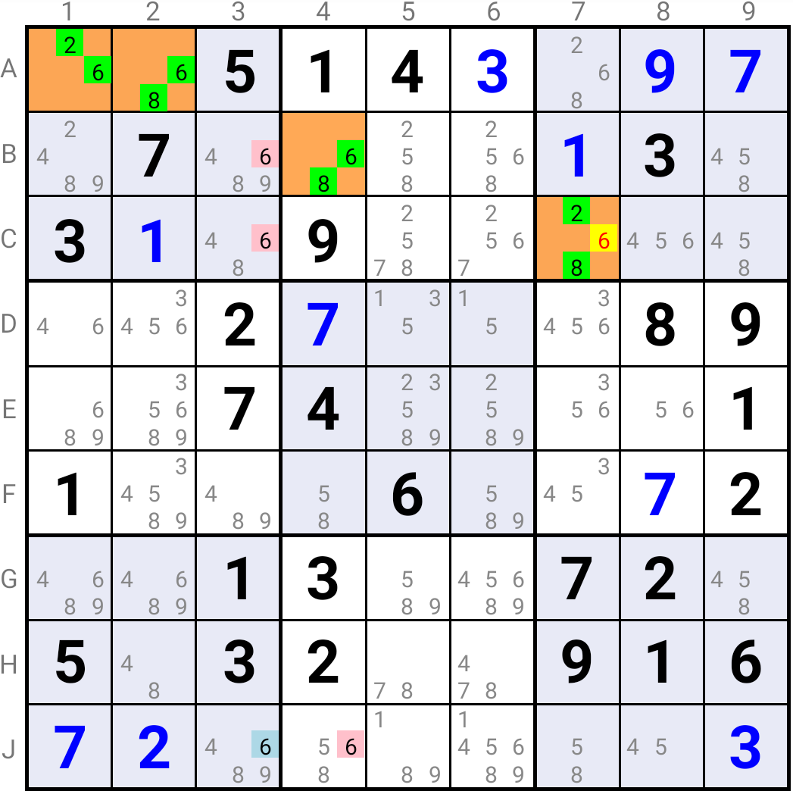
Se o Candidato 6 fosse verdadeiro em C7, que é uma Célula Alvo, isso implicaria que ele é um Candidato Base verdadeiro. Ser verdadeiro em A1 ou A2 levaria a que fosse verdadeiro em J3 e B4. No entanto, B4 é uma Célula Alvo e deve ter um Candidato Base diferente de 6 como solução. Portanto, o Candidato 6 não pode ser a solução em C7.
Regra 6: qualquer candidato base que não possa ser verdadeiro no nó espelho associado a uma célula alvo é falso nessa célula alvo.
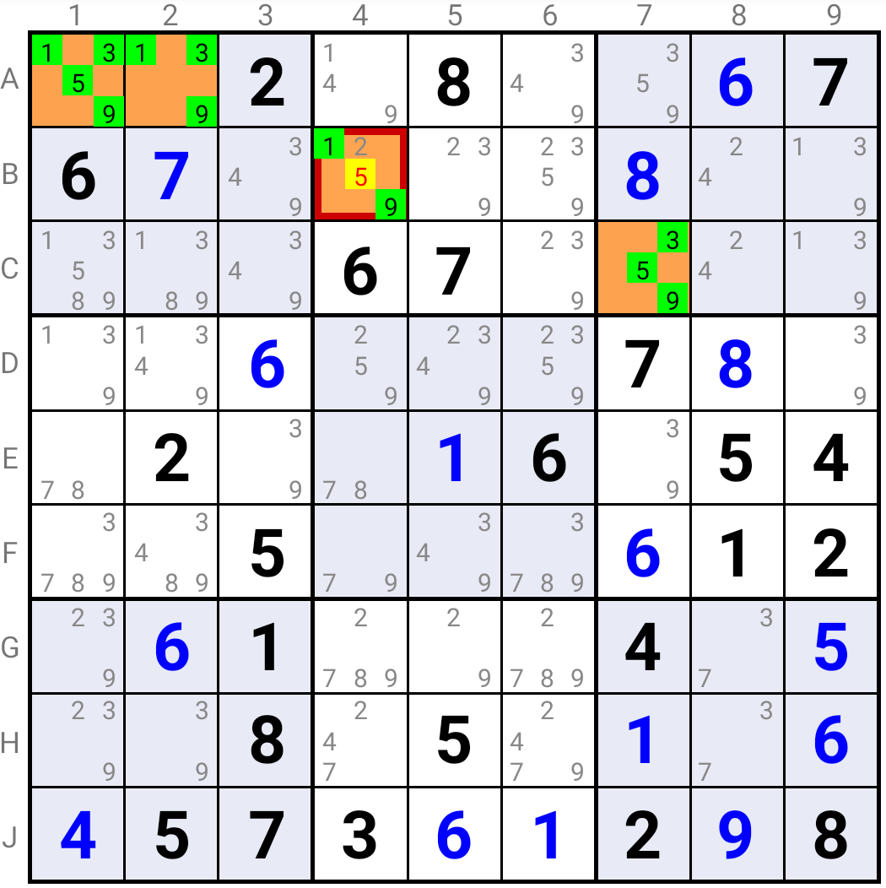
Se um candidato desse tipo for a solução em uma célula base e em uma célula alvo, ele deverá ser a solução no nó espelho associado, pois as células nesse nó espelho são as únicas possibilidades restantes para esse candidato na terceira linha dessa banda.
Regra 7: se uma célula em um nó espelho não contiver nenhum candidato base, a outra célula no mesmo nó espelho ficará restrita aos candidatos base presentes na célula alvo associada.
De fato, o candidato base que é a solução em uma célula alvo deve ser a solução em uma das células do seu nó espelho associado.
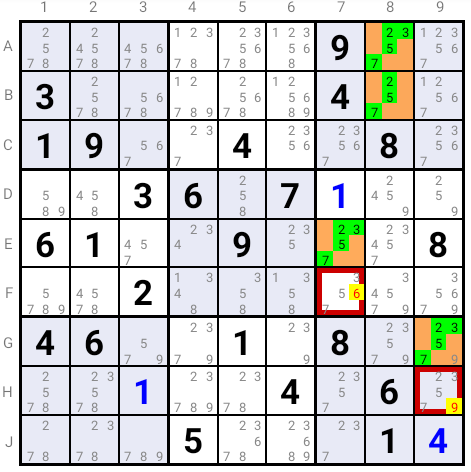
As células espelho associadas à célula alvo em G9 são D7 e F7. Uma delas deve conter um dos dígitos base 2, 3, 5 ou 7. Como D7 é resolvida com um dígito não base, F7 deve conter um dígito base presente em G9, o que elimina o candidato 6 nela.
Da mesma forma, o candidato 9 pode ser eliminado em H9.
Regra 8: se um Nó Espelho contiver apenas um valor possível que não seja um Dígito Base, ele será verdadeiro nesse Nó Espelho e falso nas células visíveis a ele.
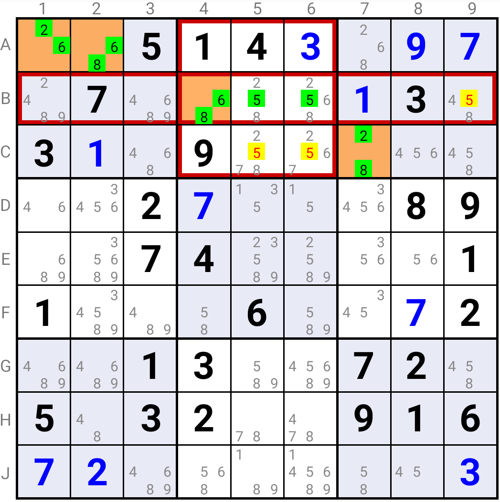
As duas células em um nó espelho devem conter um dígito base e um dígito não base, respectivamente.
Portanto, se houver apenas um valor possível para um dígito não base em uma célula espelho, esse valor deve ser a solução nesse nó espelho e pode ser eliminado nas células que visualizam esse nó espelho.
Regra 9: se um Nó Espelho contiver um dígito bloqueado, quaisquer outros dígitos que ele contenha do mesmo tipo (base ou não base) serão falsos.
Se um Nó Espelho contiver um dígito bloqueado, esse dígito bloqueado deverá ser a solução em uma das Células do Nó Espelho.
Como as duas Células em um Nó Espelho devem conter um Dígito Base e um Dígito Não Base, respectivamente, se o dígito bloqueado for um Dígito Base, todos os outros Dígitos Base poderão ser eliminados no Nó Espelho. Por outro lado, se for um Dígito Não Base, todos os outros Dígitos Não Base poderão ser eliminados no Nó Espelho.
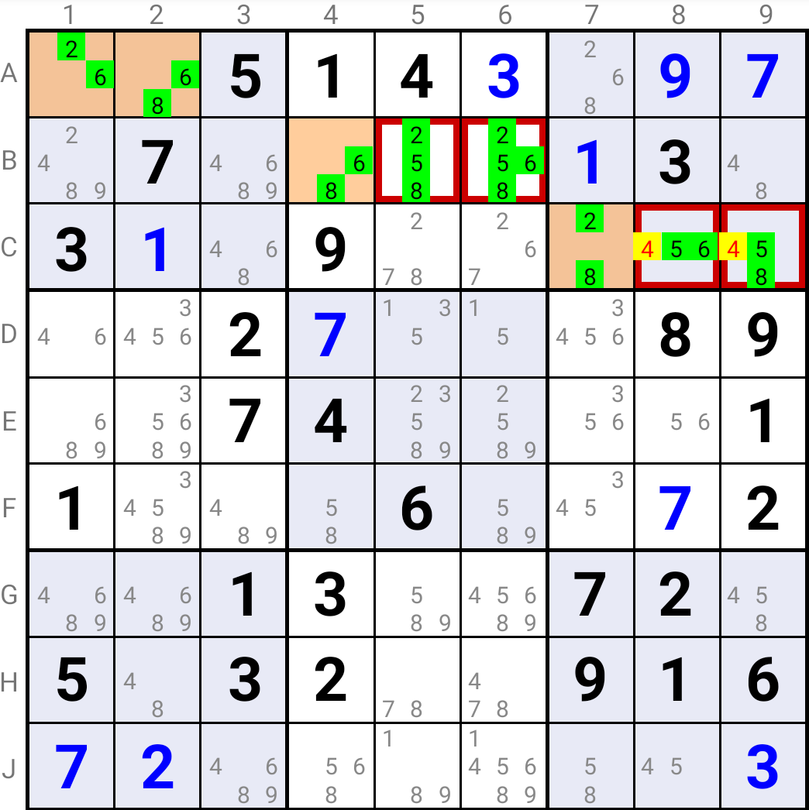
Estando bloqueado em C8 e C9, o Candidato 5 deve ser a solução em uma dessas células. Como essas células também são células espelho da célula alvo B4, uma delas deve ter o Candidato 6 ou o Candidato 8 como solução. Portanto, o Candidato 4 não pode ser a solução em C8 ou C9.
Regra 10: um dígito base conhecido é falso em todas as células que estejam totalmente visíveis, seja em relação às células base ou às células alvo.
Um dígito base conhecido é um dígito que sabemos com certeza ser a solução em uma das células base. Se for a solução em uma das células base, então também deve ser a solução em uma das células alvo. Portanto, pode ser eliminado em todas as células que visualizam ambas as células base ou ambas as células alvo.
 O candidato 5 deve ser a solução em A1 ou A2; portanto, pode ser eliminado em todas as células que contêm ambas as células.
Ele também deve ser a solução em B4 ou C7; portanto, pode ser eliminado em todas as células que contêm ambas as células de mesmo raciocínio se aplica ao candidato 8.
Regra 11: um dígito base conhecido, ou um que só pode ocorrer uma vez nas células de escape, é falso nas células que não são S em suas casas de cobertura.
Um Dígito Base conhecido, ou seja, um dígito que sabemos com certeza ser a solução em uma das Células Base, deve ser a solução em uma Célula nas Células S do CLb e em uma Célula das Células S associada à Célula Alvo na qual ele não é a solução. Obviamente, essas duas Células pertencerão a diferentes Casas de Cobertura.
No entanto, o padrão Exocet exige que todas as instâncias de cada Dígito Base como candidato, valor dado ou valor resolvido nas Células S sejam confinadas a no máximo duas Casas de Cobertura.
Portanto, se um Dígito Base conhecido for verdadeiro em uma Célula S em cada uma das Casas de Cobertura, ele pode ser eliminado em todas as Células dessas Casas de Cobertura, exceto nas Células S.
O candidato 5 deve ser a solução em A1 ou A2; portanto, pode ser eliminado em todas as células que contêm ambas as células.
Ele também deve ser a solução em B4 ou C7; portanto, pode ser eliminado em todas as células que contêm ambas as células de mesmo raciocínio se aplica ao candidato 8.
Regra 11: um dígito base conhecido, ou um que só pode ocorrer uma vez nas células de escape, é falso nas células que não são S em suas casas de cobertura.
Um Dígito Base conhecido, ou seja, um dígito que sabemos com certeza ser a solução em uma das Células Base, deve ser a solução em uma Célula nas Células S do CLb e em uma Célula das Células S associada à Célula Alvo na qual ele não é a solução. Obviamente, essas duas Células pertencerão a diferentes Casas de Cobertura.
No entanto, o padrão Exocet exige que todas as instâncias de cada Dígito Base como candidato, valor dado ou valor resolvido nas Células S sejam confinadas a no máximo duas Casas de Cobertura.
Portanto, se um Dígito Base conhecido for verdadeiro em uma Célula S em cada uma das Casas de Cobertura, ele pode ser eliminado em todas as Células dessas Casas de Cobertura, exceto nas Células S.
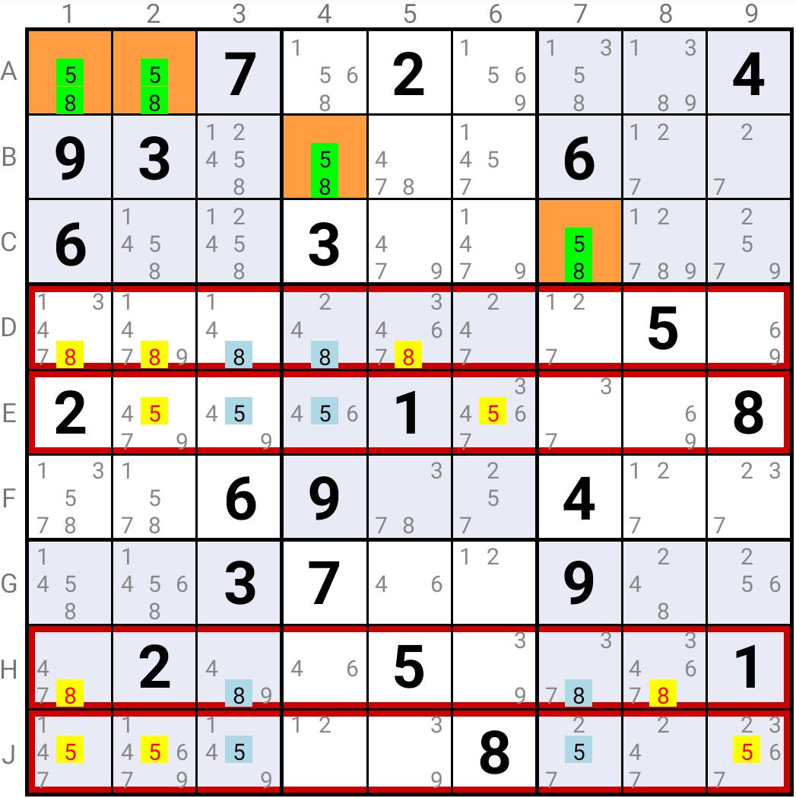
Como a opção 5 deve ser a solução em uma das células base A1 ou A2, ela deve ser verdadeira em E3 e J7, ou em J3 e E5.
Um raciocínio semelhante se aplica à opção 8.
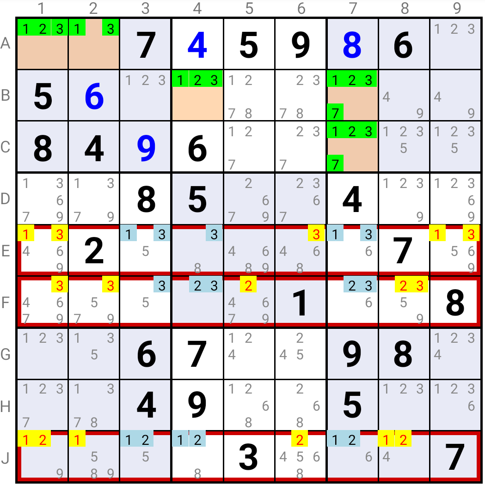
Se o Candidato 1 não for a solução nas células base A1 ou A2, então também não poderá ser a solução nas células alvo B4 e B7/C7.
Deve então ser a solução em B3, J4 e E7. O que o elimina em E1, E9, J1, J2 e J8.
Um raciocínio semelhante se aplica aos Candidatos 2 e 3.
Regra 12: para um Dígito Base conhecido, qualquer ocorrência de dígito que impeça que 2 de suas Células S sejam verdadeiras é falsa.
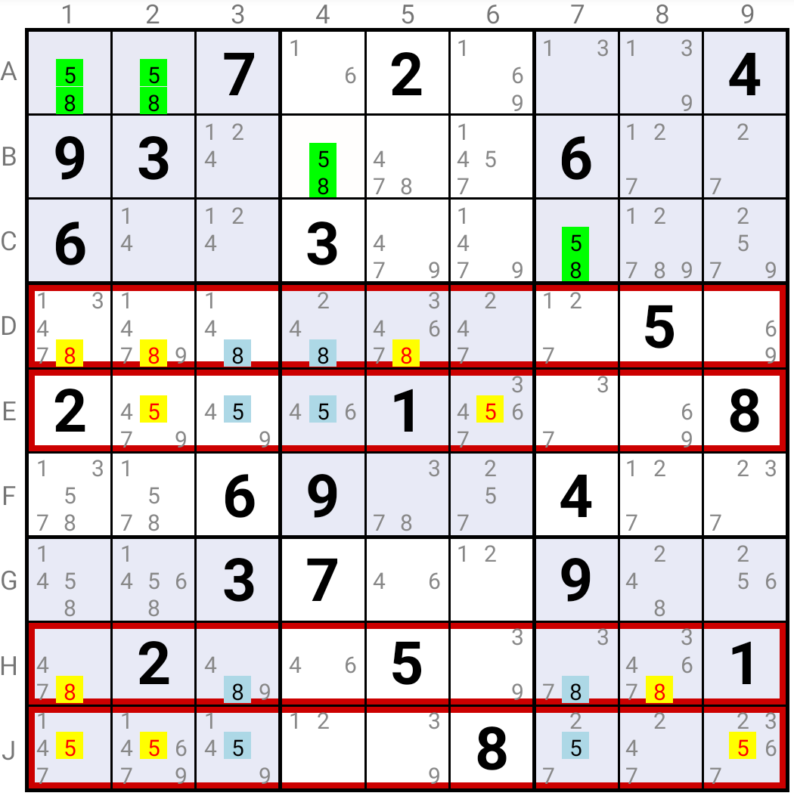
Pares Incompatíveis: se todas as combinações de um determinado Candidato a Base em uma Célula de Base com todos os outros Candidatos a Base na outra Célula de Base levarem à criação de Padrões Mortais, então esse Candidato a Base específico é falso.
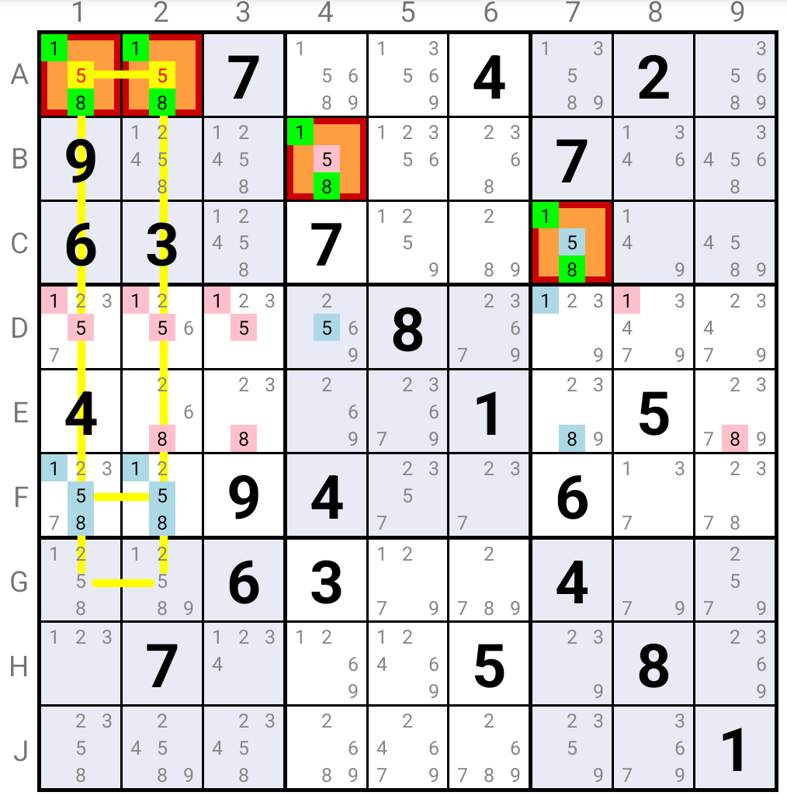
Se o Candidato 5 fosse a solução em A1 ou A2, então teria que ser verdadeiro em B4 ou C7.
Neste último caso, seria falso em B4, depois verdadeiro em D4, depois falso em D3, D2 e D1, e finalmente verdadeiro em F1 ou F2.
Ao mesmo tempo, o Candidato 1 ou o Candidato 8 teria que ser falso em C7.
Se o Candidato 1 fosse falso em C7, teria que ser verdadeiro em D7, depois falso em D3, D2 e D1, e finalmente verdadeiro em F1 ou F2.
Se o Candidato 8 fosse falso em C7, teria que ser verdadeiro em E7, depois falso em E3 e E2, e finalmente verdadeiro em F1 ou F2.
Portanto, teríamos um Padrão Mortal em A1/A2/F1/F2.
Um raciocínio semelhante, considerando o Candidato 5 verdadeiro em B4, levaria a um Padrão Mortal em A1/A2/G1/G2.